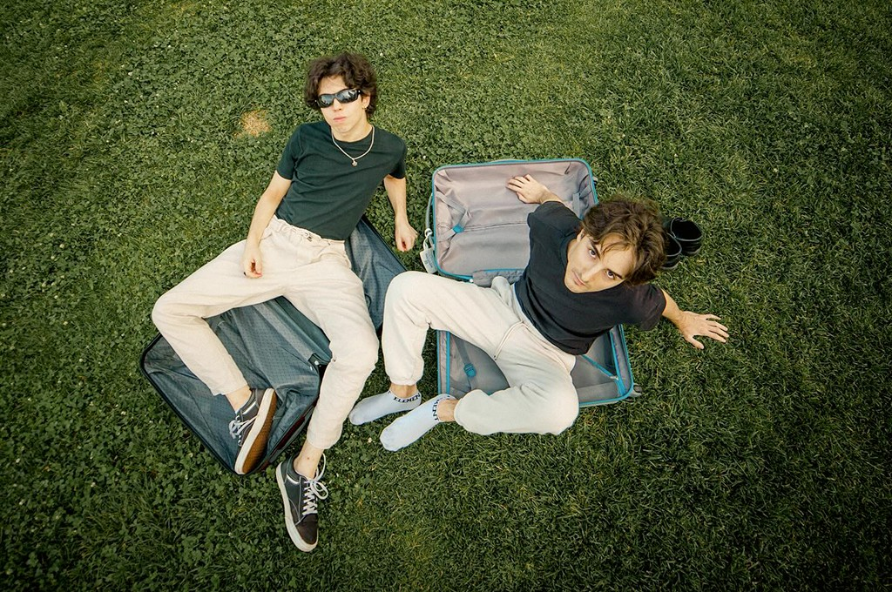

The Vanished People is an italian independent rock band formed in 2022. It consists of two members: pianist Jacopo Maria Gaeta and guitarist Piero Bonanni. They became popular for for their musical style greatly influenced by J-rock and J-pop, mixed with American/British progressive rock, Jazz, Electro House and numerous other genres.
Content found on Everybody Wiki
Learn More The Vanished People are my favorite band because of their genre of music. I've always loved j-pop and j-rock music. Knowing that their style utilizes from multiple genres like these to create new songs is incredible and I have loved every song they have relased. I also have a special connection to this band because my friend I have known since I was 14 introduced them to me when they first came out. Ever since I moved from that friend I have felt that this band is a remninder of how they have been a constant good in my life, even now.